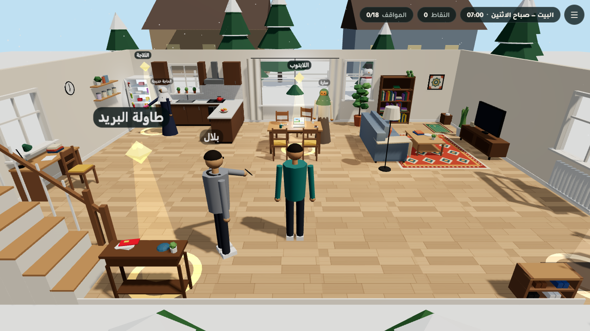
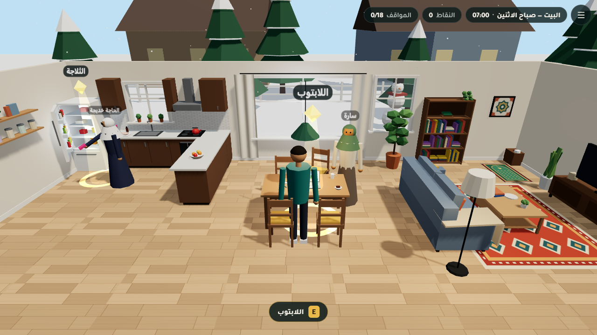
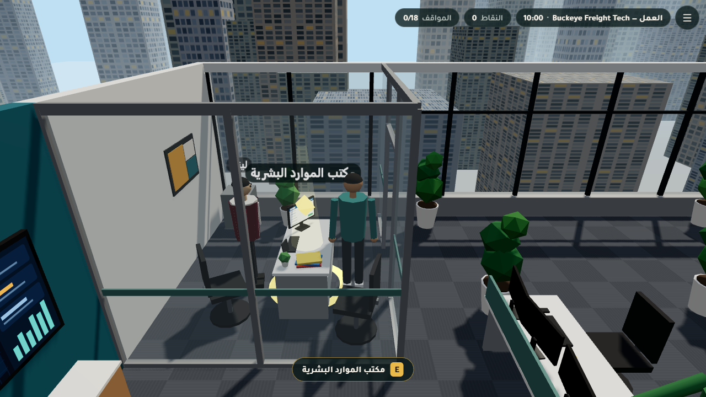
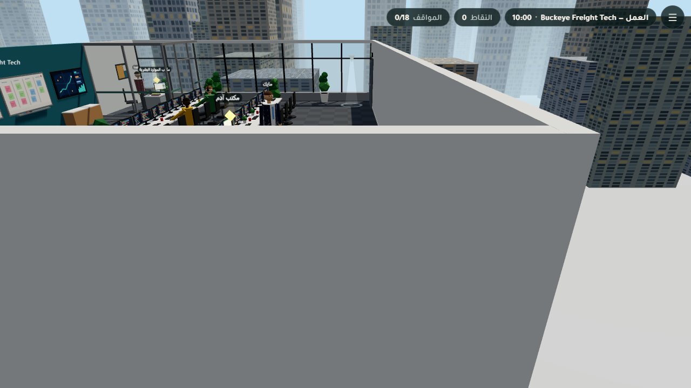
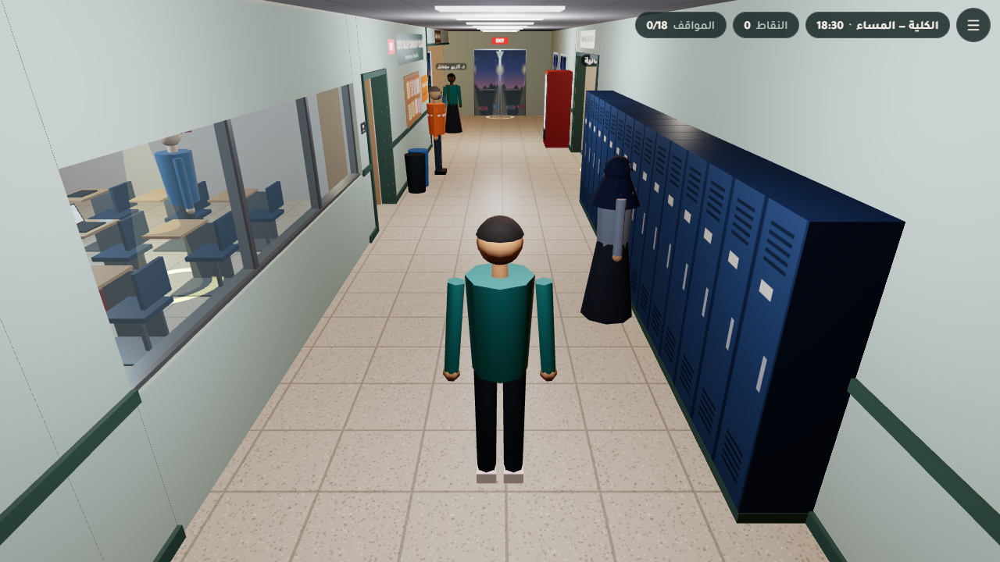
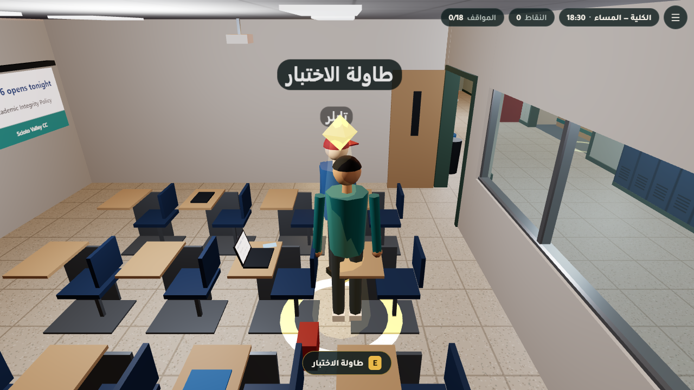
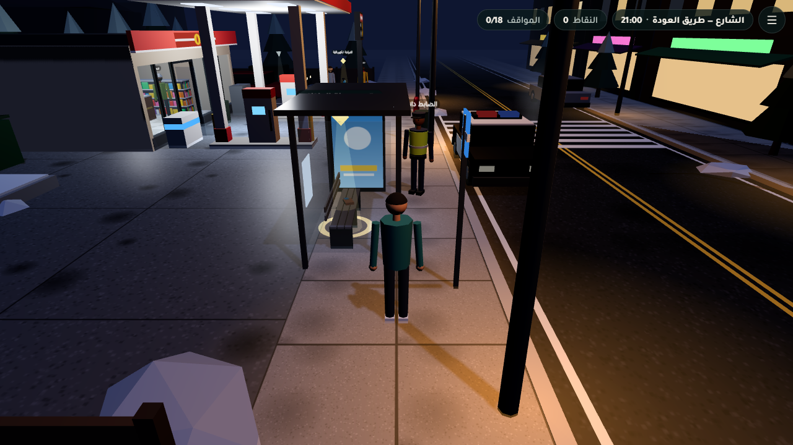
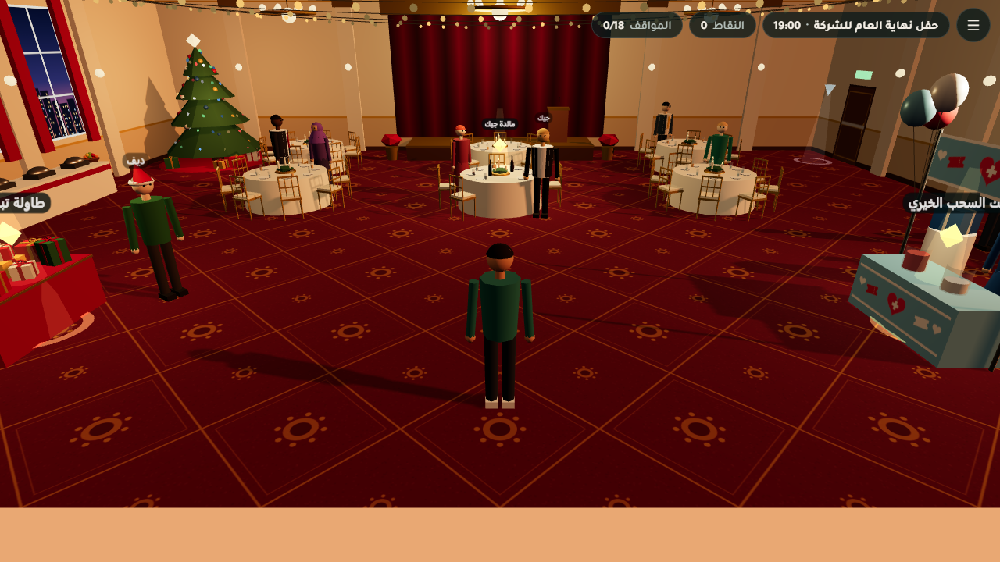
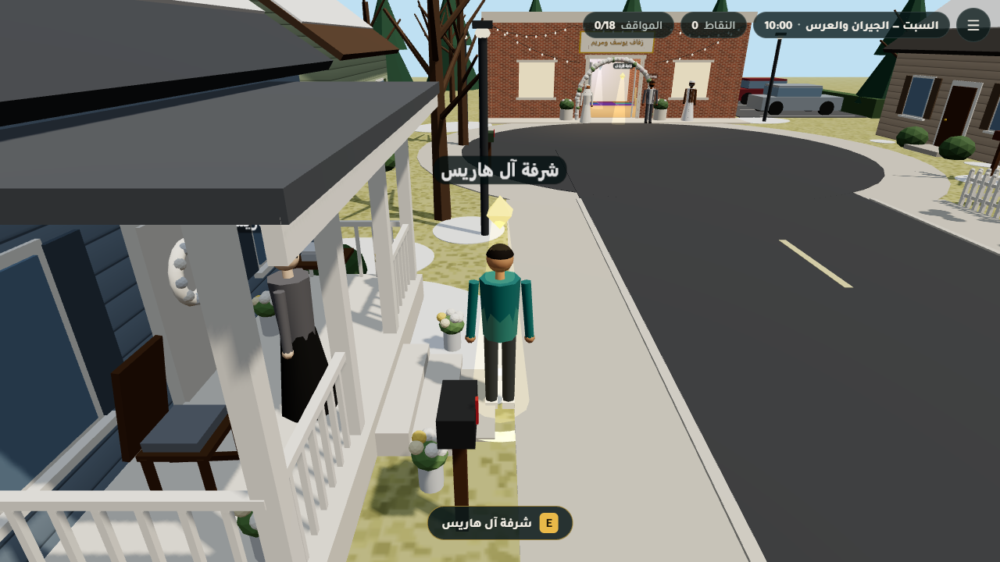

تحدي الذكاء الاصطناعي في خدمة المحتوى الإسلاميLemonada
تقرير المرحلة — المشاهد
يومك
Yawmuk — a 3D web game on the fiqh of everyday dealings
2
المرحلة الثانية: المشاهدستة عوالم ثلاثية الأبعاد مربوطة بالسيناريو
يوثّق هذا التقرير المرحلة الثانية: بناء المشاهد الست بهندسة إجرائية خالصة، وربطها بمواقف السيناريو الثمانية عشر، وطريقة التحقق منها، والمشكلات التي ظهرت أثناء العمل، والقرارات التي اتُّخذت. ويضم لقطات شاشة حقيقية لكل مشهد.
الأحكام الشرعية في هذا المشروع مسودة أعدّها ذكاء اصطناعي ودُقّقت آلياً، ولا تُعتمد قبل مراجعة عالم شرعي بشري.
فريق Lemonadaإعداد: وكيل التوثيق
2026-10-05الإصدار 1.0
١. ملخص تنفيذيQQs1QQ
بنى ستة وكلاء، وكيل لكل مكان، المشاهد الست في src/scenes/. كلها هندسة إجرائية من عناصر Three.js الأساسية وخامات canvas مولّدة بالشيفرة، بلا أي نموذج أو صورة خارجية. والتزم كل مشهد بعقد المشهد في TEAM_BRIEF.md، وبمعرّفات نقاط التفاعل والشخصيات في docs/hotspots.md.
6/6
مشاهد تُبنى وتجتاز vite build
6/6
مشاهد حُمّلت في Chrome بلا واجهة دون أي خطأ في وحدة التحكم (تشغيل وكيل التوثيق)
18/18
نقطة تفاعل يوفرها المشهد نفسه، ولا شيء وُضع آلياً
89–253
شبكة لكل مشهد وقت التشغيل، والحد في الميزانية 250
تذكير
المشاهد قصصية تخييلية. وبطاقات الحكم التي تظهر فيها مصدرها ملفات content/rulings، وهي مسودة ذكاء اصطناعي مدققة آلياً تحتاج مراجعة عالم بشري (انظر تقرير المرحلة الأولى).
المشاهد في جدول واحد
المشهد
الوقت والإضاءة
نقاط التفاعل
شبكات وقت التشغيل*
مثلثات*
صناديق تصادم*
البيت home
الاثنين 07:00 نهار (day)
laptop fridge mail_table
89
15,834
32
العمل work
الاثنين 10:00 نهار (day)
coffee_machine adam_desk hr_desk
113
4,786
42
الكلية school
الاثنين 18:30 مساء (evening)، مع سماء وضباب مخصصين
exam_desk aid_office study_room
202
7,920
64
الشارع street
الاثنين 21:00 ليل (night)
bus_bench gas_station_counter ebike
124
10,278
46
المناسبات العامة public_events
الجمعة 19:00 مساء (evening)
gift_table dinner_table raffle_booth
253
12,118
70
المناسبات الخاصة private_events
السبت 10:00 ← المساء نهار (day)
harris_porch garcia_yard wedding_hall
201
10,666
70
* هذه قياسات وكيل التوثيق بالدالة yawmuk.stats() وقائمة المشهد النشط في 2026-10-05. وهي تشمل شخصيات المحرك وعلاماته وصناديق تصادم الشخصيات. وطريقة عدّ المثلثات فيها قد تختلف عن أرقام تقارير الوكلاء الواردة في كل قسم، فمشهد المناسبات الخاصة مثلاً يذكر وكيله نحو 49 ألف مثلث بعد احتساب النسخ.
٢. طريقة البناء والعقدQQs2QQ
عقد المشهد. يصدّر كل ملف { id, title, build(ctx) }، ويُرجع:
الربط بالسيناريو. يحيل كل موقف في content/script/<location>.json إلى نقطة تفاعل (hotspot) وشخصية (npc.id). ونقاط التفاعل الثماني عشرة كلها يوفرها المشهد، وقد تحقق من ذلك المحرك ووكيل التوثيق.
ميزانية الهاتف. لا يزيد المشهد على 60 ألف مثلث و250 شبكة، وأضواؤه الإضافية بلا ظلال، وخاماته canvas لا تتجاوز 512 بكسل، ولا يحجز ذاكرة في كل إطار.
قاعدة الملفات. يعدّل كل وكيل ملف مشهده ومجلده الفرعي فقط، ولا يلمس المحرك. وأي حاجة من المحرك تُكتب في تقريره.
٣.١ مشهد البيتQQschomeQQ
البيت — صباح الاثنين · src/scenes/home.jsالاثنين 07:00 · نهار (day)

مشهد البيت من نقطة البداية: لقطة حقيقية من Chrome بلا واجهة (?scene=home&nointro=1)، بدقة 1280×720.
الوصف
طابق أرضي مفتوح مساحته 12 × 9 م، لبيت مستأجر متواضع في كولومبس صباح يوم ثلجي.
في المطبخ كاونتر خشبي داكن على شكل L، وثلاجة بابها مفتوح بزاوية 60°. وبجانبها كيس حلوى ملون، وزجاجة فانيليا صغيرة، وصينية دجاج.
في الوسط طاولة طعام من خشب البلوط، وعليها اللابتوب. شاشته تعرض إعلان بيت وشارة «موافقة مبدئية» خضراء، مرسومة بالأشكال دون نص.
في الصالة كنبة وسجادة هندسية، ورف كتب في أعلاه المصحف الأخضر وحده على حامل صغير.
وفي الركن الشمالي الشرقي ركن صلاة، سجادته متجهة إلى الجدار الشمالي (القبلة).
تقنية لافتة: جدران «بيت الدمى»: أحادية الوجه ومتجهة إلى الداخل، فتختفي حين تكون الكاميرا خارجها. ومصادماتها بارتفاع 1.1 م، تحت عتبة المحرك لحجب الكاميرا (1.2 م)، ولا سقف للمشهد.
المواقف الثلاثة
سارة — زوجة آدمhome.mortgage · نقطة laptop
سارة جالسة إلى طاولة الطعام، ولابتوبها مفتوح على صور بيت صغير بثلاث غرف قرب حديقة عامة. على الشاشة نافذة أخرى: «موافقة مبدئية على قرض عقاري بفائدة 6.4%».
خاطئنوقّع قرض البنك اليوم قبل أن يضيع البيت — الكل يفعل هذا، ولن نسأل أحداً حتى لا نتأخر. (0)
الأفضلنطلب عرضاً من جهتين للتمويل الإسلامي اليوم، ونقارن التكلفة الفعلية، وأتصل بالإمام حمزة لأشرح وضعنا. (10)
مقبولنترك هذا البيت ونستمر في الإيجار سنة أخرى، ونجمع دفعة أكبر حتى نتعلم الخيارات جيداً. (5)
الحاجة خديجة — أم آدمhome.food_ingredients · نقطة fridge
أم آدم تقف أمام الثلاجة المفتوحة، ونظارتها على طرف أنفها، تقلّب علبة حلوى جيلاتينية ملونة، وبجانبها دجاج من السوبرماركت وزجاجة «خلاصة فانيليا» لكعكة المساء.
خاطئيا أمي، كل هذا مبالغة. كميات صغيرة لا تضر، كلي واطبخي ولا تقرئي الملصقات. (0)
الأفضلنتأكد من مصدر الجيلاتين ونستبدل الحلوى إن لزم، ونشتري لحماً عليه شهادة حلال حين نستطيع، وأسأل الإمام عن لحم السوبرماركت والفانيليا. (10)
مقبولقرأت أن العلماء اختلفوا في لحم السوبرماركت، فلنطبخ الدجاج اليوم، ونتجنب الحلوى المشكوك فيها فقط. (5)
بلال — أخو آدم الأصغرhome.credit_card · نقطة mail_table
على طاولة البريد قرب الباب: رسالة من متجر إلكترونيات «بطاقة المتجر: 0% فائدة لمدة 12 شهراً!». بلال يلوّح بهاتفه وعليه تطبيق «اشترِ الآن وادفع لاحقاً».
خاطئخذ البطاقة وادفع الحد الأدنى كل شهر؛ سنة طويلة وستتدبر الباقي. (0)
الأفضللا داعي لأي بطاقة ائتمان. ادّخر ثمن هاتف مستعمل جيد واشترِه نقداً ببطاقة الخصم. (10)
مقبولأنا أستعمل بطاقتي للمصاريف العادية فقط، وفعّلت السداد الكامل التلقائي كل شهر فلا أدفع فائدة. إن أردت هاتفاً، ادّخر له أولاً، وسأريك كيف تضبط ذلك. (5)

بعد نقل آدم إلى نقطة laptopالعاقبة بعد اختيار في موقف اللابتوب
البيانات التقنية
نقطة التفاعل
الموضع
نصف القطر
laptop
[0.12, 0.85, −1.42]
1.8
fridge
[−5.0, 1.0, −3.3]
1.9
mail_table
[−2.0, 0.9, 3.95]
1.7
البداية
[0,0,3]
المخرج
[4.5,0,4.0] r1.5 (الباب الأمامي)
الأداء (تقرير الوكيل)
القيمة
شبكات المشهد نفسه
19 شبكة + 1 Points، مدمجة في 10 دفعات بحسب الخامة
المشهد كاملاً وقت التشغيل (تقرير الوكيل)
85 شبكة، ونحو 14.7 ألف مثلث
الخامات
6 خامات canvas
صناديق التصادم
32
أضواء إضافية
4 أضواء نقطية بلا ظلال
الشخصيات: سارة، والحاجة خديجة (معها كيس الحلوى)، وبلال (معه هاتف بشاشة مضيئة وسماعات حول العنق). لا شخصيات خلفية.
التحقق: نجح vite build. وفي Chrome محلي بلا واجهة عبر CDP لا أخطاء ولا تحذيرات، والنقاط الثلاث من المشهد نفسه. واختبار الوصول بملء الشبكة (نصف قطر اللاعب 0.3، وشبكة 0.1 م) وصل إلى كل النقاط والمخرج. والوكيل أصلح ما أظهرته لقطاته: إطارات معلقة، ومرآة داكنة، وتداخل سارة مع كرسي، وجدار جنوبي داكن.
ملاحظات وانحرافات: اللابتوب على طاولة الطعام كما في hotspots.md (الملزم)، لا على مكتب. وطاولة البريد أُبقيت عند x≈−2 بجانب الدرج.
مشهد العمل من عند مكتب آدم: لقطة حقيقية من Chrome بلا واجهة (?scene=work&nointro=1)، بدقة 1280×720.
الوصف
مكتب شركة Buckeye Freight Tech: مساحة داخلية 18 × 12 م، وسقف ارتفاعه 3 م.
غرباً المصعد (نقطة البداية)، ومطبخ صغير فيه آلة القهوة ومعها إبريق وأكواب.
شمالاً جدار مميز أزرق مخضر، عليه باب «غرفة هادئة» ومعه رف أحذية وسجادة صلاة مطوية. وعلى الجدار نفسه ساعة تشير إلى 10:00، وسبورتان، وشاشة تتبع الشحنات فيها نقطة شاحنة متحركة.
في الوسط صفان من 6 محطات عمل بشاشات مزدوجة. ومكتب آدم في طرف الصف الأمامي، وعليه علبة هدية سوداء بشريط فضي.
في الركن الشمالي الشرقي مكتب الموارد البشرية الزجاجي، وعلى شاشة ليندا نموذج 401(k) برسم دائري.
شرقاً نوافذ من الأرض إلى السقف تطل على أفق كولومبس الشتوي: 52 مبنى مكرراً (instanced)، ونهر.
جنوباً استراحة، وباب الدرج (المخرج).
تقنية لافتة: هندسة ثابتة مجمعة في InstancedMesh بألوان لكل نسخة. السقف وشرائط الإضاءة مستويات أحادية الوجه تختفي حين ترتفع الكاميرا فوق 3 م.
المواقف الثلاثة
جيك — زميل مبرمجwork.alcohol_pork_job · نقطة coffee_machine
عند آلة القهوة في المطبخ الصغير، جيك يصبّ قهوته الثالثة ويبدو متحمساً لفكرة جديدة.
خاطئمشروع تطبيق مصنع البيرة يناسبني — أنا أبرمج فقط، لا أبيع ولا أشرب. (0)
الأفضلشكراً يا جيك، أقدّر تفكيرك بي. لكنني لا أقدّم الخمر ولا لحم الخنزير لأسباب دينية. إن عرف ابن عمك أو أصدقاؤه مشروعاً برمجياً آخر، فأنا جاهز. (10)
خاطئسأقبل عمل النادل، وأقدّم البيرة وأطباق ضلوع الخنزير للزبائن دون أن أشرب أو آكل منها بنفسي. (0)
ليندا — مسؤولة الموارد البشريةwork.retirement_401k · نقطة hr_desk
مكتب ليندا الزجاجي في آخر الممر، وعلى شاشتها نموذج «التسجيل في خطة 401(k)». المهلة تنتهي يوم الجمعة.
الأفضلأسجّل بنسبة 5% لأحصل على المطابقة كاملة، وأختار الصندوق المتوافق مع الشريعة، وأقرأ نشرته لأفهم معايير الفرز. (10)
خاطئأبقي الصندوق الافتراضي؛ لا وقت عندي للتفاصيل، والمهم ألا يضيع التطابق. (0)
مقبوللن أشترك في الخطة أصلاً حتى أتأكد من كل شيء، حتى لو خسرت المطابقة. (5)
مايك — مندوب شركة مورّدةwork.honesty_gifts · نقطة adam_desk
آدم عضو في لجنة تقييم نظام تتبع الشاحنات الجديد. عاد إلى مكتبه فوجد مايك، مندوب إحدى الشركات المتنافسة، يضع علبة أنيقة فيها ساعة ذكية جديدة.
الأفضلأشكر مايك بلطف وأعيد الساعة، وأبلغ مديري ديف بما حدث وفق سياسة الشركة، وأسجّل ساعاتي الفعلية بدقة. (10)
خاطئأقبل الساعة؛ إنها هدية عيد ولن تؤثر في رأيي فعلاً. وأقرّب الساعات إلى 40 كالجميع. (0)
مقبوللا أحرج مايك الآن؛ آخذ العلبة ثم أسلّمها لديف ليتصرف فيها كما تقضي سياسة الشركة. (5)

مكتب الموارد البشرية الزجاجي وليندا

مشكلة ظاهرة: من نقطة البداية يحجب جدار رمادي معظم الكادر، والمشكلة نفسها عند آلة القهوة
التحقق: نجح vite build. واختبار في Node بمكتبة three.js الحقيقية: البناء والتحديث والتخلص بلا أخطاء. وبحث BFS (نصف قطر 0.3 م) وصل إلى كل النقاط (أقرب مسافة 0.7–0.8 م) وإلى المخرج. لم يلتقط الوكيل صوراً لأن متصفح الإضافة لم يصل إلى localhost.
ملاحظات وانحرافات: قُرّب جيك نحو 0.85 م من آلة القهوة، وأُدخلت نقطة البداية نحو 0.4 م إلى الداخل.
٣.٣ مشهد الكليةQQscschoolQQ
الكلية — المساء · src/scenes/school.jsالاثنين 18:30 · مساء (evening)، مع سماء وضباب مخصصين

مشهد الكلية من نقطة البداية: لقطة حقيقية من Chrome بلا واجهة (?scene=school&nointro=1)، بدقة 1280×720.
تقنية لافتة: كل الجدران InstancedMesh. لذلك أضاف الوكيل شبكة مدمجة لا تُرسم اسمها cameraOccluders، فيها السقف والجدران الكاملة. فتبقى الكاميرا تحت السقف وداخل الغرفة. وجدران الغرفة الزجاجية مستثناة عمداً حتى تُرى من خلالها.
المواقف الثلاثة
تايلر — زميل في المادةschool.cheating · نقطة exam_desk
في القاعة قبل المحاضرة، يفتح الطلاب اختبار الأسبوع القصير على الإنترنت (مفتوح 24 ساعة، فردي). تايلر يجلس بجانب آدم، عيناه حمراوان من التعب.
الأفضللا أستطيع إرسال الإجابات يا تايلر، لكن تعال نذاكر معاً نصف ساعة بعد المحاضرة، وسأريك الفكرة حتى تحله بنفسك. (10)
مقبولأتجاهل الرسالة وأبتعد بهدوء دون أن أقول شيئاً حتى لا أُحرج. (5)
السيدة روزا رودريغيز — مستشارة المساعدات الماليةschool.student_loan · نقطة aid_office
في استراحة المحاضرة يمر آدم بمكتب المساعدات المالية. رسوم الفصل القادم 4,200 دولار، وهو يدّخر للبيت. السيدة رودريغيز تبتسم من وراء مكتب مليء بالمطويات.
الأفضلأقدّم على المنح وخطة الأقساط بلا فائدة، وأسأل ديف عن دعم الشركة للدراسة، وأتواصل مع صندوق المسجد قبل أي قرض. (10)
خاطئأوقّع القرض الآن؛ الفائدة منخفضة والكل يأخذه، ولا وقت عندي للبحث عن بدائل. (0)
مقبولأؤجل التسجيل فصلاً واحداً، وأعمل وأدّخر حتى أدفع نقداً. (5)
د. كارين ميتشل — أستاذة المادةschool.mixed_social · نقطة study_room
بعد المحاضرة، يخرج آدم من غرفة دراسة زجاجية في المكتبة حيث كانت مجموعته (هو وهانا وكارلوس) تراجع المشروع والباب مفتوح. د. ميتشل تمر وتتوقف مبتسمة وتمد يدها للمصافحة.
الأفضلأضع يدي على صدري وأبتسم: «شكراً جزيلاً يا دكتورة! أنا لا أصافح النساء لأسباب دينية، لكنني ممتن جداً لكلامك». (10)
مقبولأصافحها بسرعة حتى لا أحرجها أمام الطلاب. (5)
خاطئأتجاهل يدها وأنظر إلى هاتفي وأمضي دون تفسير. (0)

بعد نقل آدم إلى نقطة exam_desk
البيانات التقنية
نقطة التفاعل
الموضع
نصف القطر
exam_desk
[−5.95, 0, −3.9]
1.6
aid_office
[0.3, 0, 2.35]
1.6
study_room
[7.05, 0, −3.0]
1.6
البداية
[−9,0,0]
المخرج
[9.5,0,0] r1.5 (أبواب زجاجية إلى الموقف)
الأداء (تقرير الوكيل)
القيمة
شبكات المشهد نفسه
نحو 60
المشهد كاملاً وقت التشغيل
202 شبكة، ونحو 7.9 ألف مثلث (أغلبها شخصيات المحرك)
صناديق التصادم
64
أضواء إضافية
7 أضواء نقطية بلا ظلال
الشخصيات: تايلر (قبعة بيسبول حمراء)، وروزا (كارديغان برتقالي)، ود. ميتشل (معها ملف أزرق). ومعهم أربعة خلفيون: هانا وكارلوس في الغرفة الزجاجية، وطالبة بحجاب كحلي عند الخزائن، وعامل بسترة برتقالية.
التحقق: نجح vite build. وحمّل الوكيل المشهد في Chrome بلا واجهة عبر CDP، فلا أخطاء، والمشهد حقيقي (isPlaceholder:false). ونقل آدم إلى كل نقطة وإلى المخرج، والتقط صوراً بالعربية والإنجليزية. وإعادة تحميل المشهد عبر goto لا تزيد عدد الموارد.
ملاحظات وانحرافات: هذا الوكيل هو الذي اكتشف خطأ المحرك عند المخرج (انظر القسم 4).
٣.٤ مشهد الشارعQQscstreetQQ
الشارع — طريق العودة · src/scenes/street.jsالاثنين 21:00 · ليل (night)

مشهد الشارع من نقطة البداية: لقطة حقيقية من Chrome بلا واجهة (?scene=street&nointro=1)، بدقة 1280×720.
الوصف
شارع ليلي مبلل: طريق بمسارين وخط أصفر مزدوج وممر مشاة، ورصيف قريب.
محطة وقود بمظلة حمراء بيضاء ومضختين، ومتجر بواجهة زجاجية. وفوق الكاشير شاشة «JACKPOT $900 MILLION» تنبض، وعلى الكاونتر بطاقات الكشط.
موقف الحافلات: مقعد معدني، وعليه محفظة بنية كبيرة الحجم تبرز منها بطاقة.
سيارة شرطة أضواؤها تومض بالأحمر والأزرق.
سيارة عمر الخضراء الداكنة وأضواؤها مضاءة، وهي المخرج.
الدراجة الكهربائية زرقاء فاتحة.
في الجهة المقابلة 6 واجهات متاجر بلافتات نيون، وبخار يتصاعد من غطاء الصرف.
تقنية لافتة: الهندسة الثابتة مدمجة في 5 دفعات ملونة. وحدود غير مرئية ارتفاعها 1 م، فلا تتأثر بها الكاميرا. وللكاميرا وحدها ألواح فوق سقف المتجر والمظلة: تُبقيها تحتهما، ولا تحجب المنظر من أعلى.
المواقف الثلاثة
الضابط دانيالز — شرطي دورية في الحيstreet.lost_wallet · نقطة bus_bench
على مقعد محطة الحافلات، محفظة جلدية بنية منسية. يفتحها آدم: 340 دولاراً نقداً، رخصة قيادة باسم «ستيفن كارتر» بعنوان في الحي المجاور، وبطاقتان بنكيتان. على بعد أمتار، سيارة شرطة متوقفة.
الأفضلأسلّم المحفظة كاملة للضابط، وأطلب رقم البلاغ، وأترك رقمي لو احتاج صاحبها التواصل. (10)
خاطئأقول للضابط إنها مجرد محفظة فارغة؛ آخذ النقود وأرسل البطاقات والرخصة بالبريد إلى العنوان. (0)
مقبوللا أشغل الضابط؛ آخذ المحفظة إلى البيت وأحفظها جيداً، ثم أوصلها غداً بنفسي إلى العنوان المكتوب في الرخصة. (5)
عمر — صديق آدم المقرّبstreet.lottery · نقطة gas_station_counter
داخل المحطة الدافئة، عمر يشتري شاي وكعكة. على الشاشة فوق الكاشير: «الجائزة الكبرى: 900 مليون دولار!». وبجانب الصندوق بطاقات الكشط اللامعة، وعلى هاتف عمر إعلان: «راهن على مباراة الليلة — أول رهان مجاني!».
خاطئنشتري تذكرة واحدة فقط بنية الصدقة؛ دولاران لا يضران. (0)
الأفضليا عمر، اليانصيب والرهان — حتى «المجاني» الذي يجرّك للإيداع — باب لا أحب فتحه. تعال نضع الدولارين في صندوق التبرع للمسجد ونشرب الشاي. (10)
خاطئلن أشتري تذكرة اليانصيب، لكن الرهان المجاني لا يكلفنا شيئاً، فلنجرّبه مرة. (0)
دينيس — مشترية من Marketplacestreet.buying_selling · نقطة ebike
في موقف المحطة المضاء، أوقف بلال الدراجة الكهربائية القديمة. تبدو لامعة بعد التنظيف، لكن آدم يعرف أن بطاريتها لم تعد تحمل إلا نصف الشحن. الإعلان يقول 600 دولار. دينيس تصل في معطف أصفر.
خاطئ«نعم، كل شيء ممتاز!» — آخذ الـ600؛ هي لم تسأل عن البطارية تحديداً. (0)
الأفضلأخبرها بصراحة أن البطارية تحمل نصف الشحن، وأن بطارية جديدة تكلف نحو 200، وأخفض السعر إلى 420. (10)
خاطئأقول لها: «جرّبيها بنفسك وقرري»، فإن سألت عن البطارية أخبرتها. (0)
التحقق: نجح vite build. وفي اختبار Node لم تقع أخطاء، والمعرّفات مطابقة لـhotspots.md. وبحث بشبكة 0.2 م وصل إلى النقاط الثلاث والمخرج. لم يلتقط الوكيل صوراً بسبب متصفح الإضافة.
ملاحظات وانحرافات: بعض خامات canvas فيها نص إنجليزي قصير («JACKPOT $900 MILLION» وأسعار الوقود)، وهذا يخالف قاعدة «لا نص إلا عبر makeLabel». وقد رفعه الوكيل إلى المشرف. ونُقل المخرج نحو 1.5 م عن موضعه في الدليل حتى لا يقع داخل صندوق تصادم السيارة.
٣.٥ مشهد المناسبات العامةQQscpublic_eventsQQ
حفل نهاية العام للشركة · src/scenes/public_events.jsالجمعة 19:00 · مساء (evening)

مشهد المناسبات العامة من نقطة البداية: لقطة حقيقية من Chrome بلا واجهة (?scene=public_events&nointro=1)، بدقة 1280×720.
الوصف
قاعة فندق مساحتها 22 × 16 م وسقفها 5 م.
مسرح بستارة مخملية ومنصة وميكروفون، وشجرة أعياد ارتفاعها 3.5 م، وثلاث ثريات، و4 سلاسل إضاءة.
تقنية لافتة: 136 مصباحاً في السلاسل و64 مصباحاً على الشجرة، كلها في InstancedMesh واحد. والوميض يأتي من متغير uTime واحد في الـshader، بلا أي حجز ذاكرة في كل إطار.
المواقف الثلاثة
ديف — مدير الفريقpublic_events.holiday_greetings · نقطة gift_table
عند طاولة تبادل الهدايا («سانتا السري») المزينة بالأشرطة، ديف بقبعة سانتا الحمراء يوزع الأسماء ضاحكاً. يلتفت إلى آدم بحرارة.
الأفضل«شكراً يا ديف! أتمنى لك ولعائلتك عطلة سعيدة ووقتاً جميلاً معاً». وأشارك في تبادل الهدايا بهدية عامة لطيفة (كوب وقهوة فاخرة). (10)
التحقق: نجح vite build. وفي اختبار Node لم تقع أخطاء، وملء الشبكة (0.1 م) وصل إلى النقاط الثلاث والمخرج. لم يلتقط الوكيل صوراً، ولم يُجرَّب shader الوميض على معالج رسوميات حقيقي.
ملاحظات وانحرافات: الخمر على مائدة جيك تظهر زجاجات داكنة وكؤوساً حمراء داكنة فقط، دون علامات تجارية.
مشهد المناسبات الخاصة من نقطة البداية: لقطة حقيقية من Chrome بلا واجهة (?scene=private_events&nointro=1)، بدقة 1280×720.
الوصف
شارع سكني مغلق (cul-de-sac): طريق عرضه 7 م ينتهي بدائرة دوران قطرها نحو 14 م. وعلى جانبيه أشجار عارية، وصنوبر مثلج، وصناديق بريد.
6 بيوت، منها بيت آل هاريس، وبيت آدم بباب أخضر، وبيت آل غارسيا.
شرفة آل هاريس: إكليل أبيض على الباب، وكرسي هزاز، و5 باقات زهور بألوان هادئة، ولا ألوان زاهية.
فناء آل غارسيا: سياج أبيض، وقلعة نطاطة على شكل ديناصور أخضر، وكعكة بخمس شموع، و19 بالوناً تتمايل، وكيس هدايا أحمر داكن.
قاعة المجتمع في آخر الشارع: مبنى من الطوب، وقوس زهور أبيض، ولافتة «زفاف يوسف ومريم» عبر makeLabel. وفي الداخل 4 طاولات مستديرة، وساحة رقص خافتة في الخلف.
تقنية لافتة: جذوع الأشجار وأغصانها والبالونات والخيوط كلها InstancedMesh. والعمل الوحيد في كل إطار تحديث مصفوفات البالونات والخيوط (19 + 19) وقفز ليو، بمتغيرات مُعدّة مسبقاً.
المواقف الثلاثة
مارغريت هاريس — الجارة المسنة، أرملة والترprivate_events.neighbor_funeral · نقطة harris_porch
مارغريت تجلس على كرسي هزاز في شرفتها، ملفوفة بشال رمادي، وحولها باقات زهور من الجيران. والتر هو من أصلح دراجة آدم مرتين ولم يقبل دولاراً. سارة طبخت صينية أرز ودجاج.
خاطئ«لست متأكداً». أترك الطعام عند الباب وأنصرف بسرعة لأن الموقف غير مريح ولا أعرف ماذا أقول. (0)
الأفضلأجلس معها قليلاً وأذكر لطف والتر، وأعرض أن أجرف الثلج عن ممرها هذا الشتاء، وأحضر لمواساة العائلة دون المشاركة في الطقوس الدينية — وأسأل الإمام عن تفاصيل الحضور. (10)
ماريا غارسيا — الجارة المقابلة، أم ليوprivate_events.gifts_birthday · نقطة garcia_yard
ظهراً، فناء آل غارسيا: قلعة نطاطة على شكل ديناصور، كعكة خضراء، وأطفال يركضون. الحاجة خديجة جاءت مع آدم وأحضرت كعكة بالتمر. ماريا تقترب بكيس هدايا أنيق.
الأفضل«شكراً من القلب! الشوكولاتة والوشاح رائعان. أنا لا أشرب، فاسمحي لي أن أعيد إليك النبيذ — والباقي سأستمتع به كثيراً». (10)
خاطئآخذ الكيس كما هو وأشكرها، ثم أعطي زجاجة النبيذ لجيك كهدية في العرس الليلة؛ لن أضيّعها. (0)
مقبولآخذ الكيس شاكراً دون كلمة عن النبيذ حتى لا أحرجها، وأتخلص من الزجاجة في البيت. (5)
يوسف — صديق آدم، العريسprivate_events.wedding · نقطة wedding_hall
المساء، قاعة المجتمع في آخر الشارع. عُقد النكاح عصراً في المسجد على يد الإمام حمزة، والآن وليمة العرس: أضواء بيضاء، موائد طعام بنغالي وعربي، جيك وإميلي يجربان البرياني. لكن أبناء عمومة يوسف استأجروا «دي جي» يجهّز ساحة رقص مختلطة بعد العشاء، وسمع آدم أن بعض الضيوف ينوون إخراج زجاجات في الموقف لاحقاً.
الأفضلأبقى مع يوسف للتهنئة والعشاء والصور، ثم أستأذن منه بلطف وأنصرف قبل أن تبدأ ساحة الرقص والشرب. (10)
خاطئأبقى حتى النهاية على طاولتي مع الأصدقاء، حتى بعد بدء الرقص المختلط والشرب في الموقف؛ لن أترك صديقي ليلة عرسه. (0)
خاطئأغادر فوراً دون أن أهنئ يوسف، وأكتب في مجموعة شباب المسجد أن العرس كان «فضيحة». (0)

بعد نقل آدم إلى نقطة harris_porch
البيانات التقنية
نقطة التفاعل
الموضع
نصف القطر
harris_porch
[−5.45, 0, 6]
1.8
garcia_yard
[6.55, 0, 1.15]
1.8
wedding_hall
[0, 0, −14.9]
1.9
البداية
[5,0,12]
المخرج
[0,0,−20.8] r1.5 (داخل القاعة)
الأداء (تقرير الوكيل)
القيمة
شبكات المشهد
27 شبكة (16 منها InstancedMesh، و1,168 نسخة)، ونحو 49 ألف مثلث
الشخصيات
10
صناديق التصادم
61
الشخصيات: مارغريت على الشرفة، وماريا عند الطاولة، ويوسف ببدلة رمادية ووردة بيضاء. ومعهم خلفيون: مريم، والإمام حمزة (طاقية وثوب)، وجيك وإميلي، والحاجة خديجة، وليو يقفز على القلعة، وطفل آخر.
التحقق: نجح vite build. وفي اختبار Node لم تقع أخطاء ولا مصفوفات NaN، وملء الشبكة وصل إلى النقاط الثلاث والمخرج. وكشف الاختبار ثغرة في حدود الركن الشرقي فأُصلحت. لم يلتقط الوكيل صوراً.
ملاحظات وانحرافات: انحرافات عن hotspots.md رُفعت للمراجعة: نُقل مركز الدائرة إلى z=−8.5 ونُقلت القاعة جنوباً، لأن الدائرة في الدليل كانت تتداخل مع القاعة ومع فناء غارسيا. وقُلّص الأطفال الخلفيون إلى طفل واحد إضافي.
٤. طريقة التحققQQs4QQ
أ. البناء
اجتاز npx vite build عند كل وكيل مشهد. وأعاد وكيل التوثيق البناء في 2026-10-05 إلى مجلد مؤقت حتى لا يمس dist/، فنجح: 52 وحدة في نحو 16 ثانية. وحجم حزمة كل مشهد بين 22 و33 kB تقريباً.
ب. اختبارات المشي (الوصول)
شغّل كل وكيل build() الحقيقي، في Node أو في المتصفح، ثم ملأ شبكة أرضية من نقطة البداية بدقة 0.1–0.2 م، ومثّل اللاعب دائرة نصف قطرها 0.3–0.32 م. وفي المشاهد الست كلها وصل الملء إلى النقاط الثلاث وإلى المخرج. وكشف هذا الاختبار ثغرة في حدود مشهد المناسبات الخاصة فأُصلحت.
ج. Chrome بلا واجهة
تحقق وكيلا البيت والكلية بصرياً عبر Chrome محلي بلا واجهة يُقاد ببروتوكول CDP، لأن متصفح الإضافة لم يصل إلى الخادم المحلي. أما بقية الوكلاء فلم يلتقطوا صوراً. لذلك أجرى وكيل التوثيق فحصاً موحداً لكل المشاهد:
شغّل npx vite --port 5199.
قاد Chrome المثبت بلا واجهة عبر puppeteer-core، مع رسم برمجي (SwiftShader).
فتح ?scene=<id>&nointro=1 لكل مشهد.
انتظر حتى يصير المشهد نشطاً.
قرأ قائمة النقاط والإحصاءات، والتقط لقطة من البداية، ثم نقل آدم بـyawmuk.teleport() والتقط لقطة ثانية.
أغلق الخادم بعد الانتهاء.
المشهد
حُمّل
مشهد حقيقي
النقاط التي وفّرها المشهد
أخطاء وحدة التحكم
home
نعم
نعم
laptopfridgemail_table
0
work
نعم
نعم
coffee_machineadam_deskhr_desk
0
school
نعم
نعم
exam_deskaid_officestudy_room
0
street
نعم
نعم
bus_benchgas_station_counterebike
0
public_events
نعم
نعم
gift_tabledinner_tableraffle_booth
0
private_events
نعم
نعم
harris_porchgarcia_yardwedding_hall
0
وجرّب وكيل التوثيق أيضاً موقفاً كاملاً في البيت: الحوار، ثم الخيارات، ثم العاقبة (+10)، ثم بطاقة الحكم. ونجح التدفق.
٥. المشكلات التي ظهرتQQs5QQ
المشكلة
الوصف
المعالجة / الحالة
حدود الاستخدام
بحسب المشرف، توقف بعض الوكلاء أثناء العمل حين بلغوا حدود الاستخدام، ثم استُؤنف عملهم. ولا تذكر تقارير المشاهد تفاصيل ذلك.
استُؤنف العمل واكتملت المشاهد الست.
متصفح الإضافة لا يصل إلى localhost
أعاد Chrome الإضافة ERR_CONNECTION_REFUSED أو صفحة chrome-error:// على localhost و127.0.0.1، مع أن curl من الجهاز نفسه حصل على 200. وعنوان الشبكة المحلية رُفض بسبب الصلاحيات. ويبدو أن ذلك المتصفح يعمل خارج شبكة هذا الجهاز.
صار المعتمد Chrome محلياً بلا واجهة عبر CDP، ووُثّق ذلك في src/engine/README.md. أما المشاهد الأربعة التي لم يلتقط وكلاؤها صوراً فقد صوّرها وكيل التوثيق.
خطأ في المحرك عند المخرج
اكتشفه وكيل الكلية: في game.js كان معامل الزمن t في حلقة الإطارات يُظلّل دالة الترجمة t(). فكانت الحلقة ترمي TypeError: t is not a function في كل إطار قرب أي مخرج، في كل المشاهد.
أُصلح: صار المعامل (dt, time)، وتحققتُ من ذلك في الشيفرة الحالية، ويؤكده تقرير المحرك.
الأسماء تظهر عبر الجدران
كان makeLabel يستعمل depthTest:false افتراضياً، فاسم تايلر مثلاً يظهر من الممر.
صار depthTest مفعّلاً افتراضياً (تقرير المحرك).
دليل المحرك لم يكن جاهزاً
بنى عدة وكلاء مشاهدهم قبل وجود src/engine/README.md، فاعتمدوا على قراءة kit.js وsceneManager.js مع شروط احتياط.
اكتمل الدليل لاحقاً. والمشاهد تستعمل object وmarkerHeight المدعومين.
كلفة حجب الكاميرا
كلّف تتبع الأشعة ضد الشبكات الكبيرة المدمجة نحو 20 ms.
صار المحرك يستبعد آلياً الشبكات التي تزيد على 2000 مثلث، والمشاهد تمرر بدائل عبر cameraOccluders.
الكاميرا خلف جدار في مشهد العمل
اكتشاف جديد لوكيل التوثيق من لقطاته: عند نقطة البداية وعند آلة القهوة يغطي جدار رمادي معظم الكادر. ولقطات مكتب آدم والموارد البشرية سليمة.
مفتوح: يُقترح جعل الجدار الغربي والجنوبي أحادي الوجه («بيت الدمى») كبقية المشاهد، أو تعديل الكاميرا.
نص داخل الخامات
في مشهد الشارع نص إنجليزي داخل الخامات («JACKPOT $900 MILLION» وأسعار الوقود)، فلا يتبدل مع اللغة.
مفتوح: قرار للمشرف.
الأضواء فوق الميزانية
الدليل يحدد 3 أضواء نقطية على الأكثر، وفي مشاهد البيت 4، والشارع 5، والمناسبات العامة 5، والكلية 7. وكلها بلا ظلال.
مفتوح: يُراجع الأداء على هاتف حقيقي في المرحلة الثالثة.
ضبط بصري لم يُجرَّب
شدة الأضواء وحجم اللافتات في الشارع والقاعتين، وshader الوميض في الحفل، لم تُضبط على معالج رسوميات حقيقي. وFPS بلا واجهة لا معنى له مع الرسم البرمجي.
مفتوح: فحص بصري وأداء على أجهزة حقيقية.
٦. القراراتQQs6QQ
القرار
السبب
هندسة إجرائية فقط، وخامات canvas مولّدة
لا ملفات خارجية ولا تحميل من الشبكة، ولا مشكلات ترخيص. والحجم صغير: حزمة المشهد 22–33 kB.
جدران «بيت الدمى» أحادية الوجه، ومصادمات بارتفاع 1.1 م
تبقى الكاميرا الثالثة ترى الغرفة ولا تلتصق بكتف آدم. اتُّبع هذا في البيت والحفل.
شبكة cameraOccluders لا تُرسم
في الكلية الجدران InstancedMesh، فاحتاجت حاجزاً صريحاً للكاميرا يبقيها داخل الغرفة. وتبنّى المحرك الفكرة.
الدمج والنسخ (Instancing / batching)
الالتزام بميزانية الهاتف. مثلاً: 1,168 نسخة في 16 InstancedMesh في المناسبات الخاصة، و400 كتاب في المكتبة.
الالتزام بـhotspots.md عند التعارض مع وصف المهمة
مثلاً: اللابتوب على طاولة الطعام لا على مكتب.
انحرافات مدروسة عن الإحداثيات، موثقة للمراجعة
تفادي التداخل: مخرج الشارع كان داخل صندوق تصادم السيارة، ودائرة الشارع المغلق كانت تتداخل مع القاعة.
شخصيات خلفية بادئتها bg_
تُحيي المكان دون اسم أو حوار، مثل الإمام حمزة ومريم في العرس، وأمينة بالحجاب في الحفل.
احترام حساسية المحتوى بصرياً
المصحف وحده على رف علوي، والقبلة نحو الجدار الشمالي. والخمر زجاجات داكنة بلا علامات تجارية، وألوان شرفة العزاء هادئة.
ما يُنقل إلى المرحلة الثالثة
إصلاح زاوية الكاميرا في مشهد العمل.
قرار في النص الإنجليزي داخل خامات الشارع.
مراجعة عدد الأضواء والأداء على هاتف حقيقي.
فحص بصري على معالج رسوميات حقيقي.
اعتماد انحرافات الإحداثيات.
تشغيل أدوات التدقيق الشرعي في CI.
مراجعة عالم بشري للأحكام.
— نهاية تقرير المرحلة الثانية — المصادر: docs/phase-2/scene_*.mddocs/phase-1/engine.mddocs/hotspots.mdcontent/script/*.jsonsrc/scenes/*src/engine/README.md، وتشغيل وكيل التوثيق في 2026-10-05.